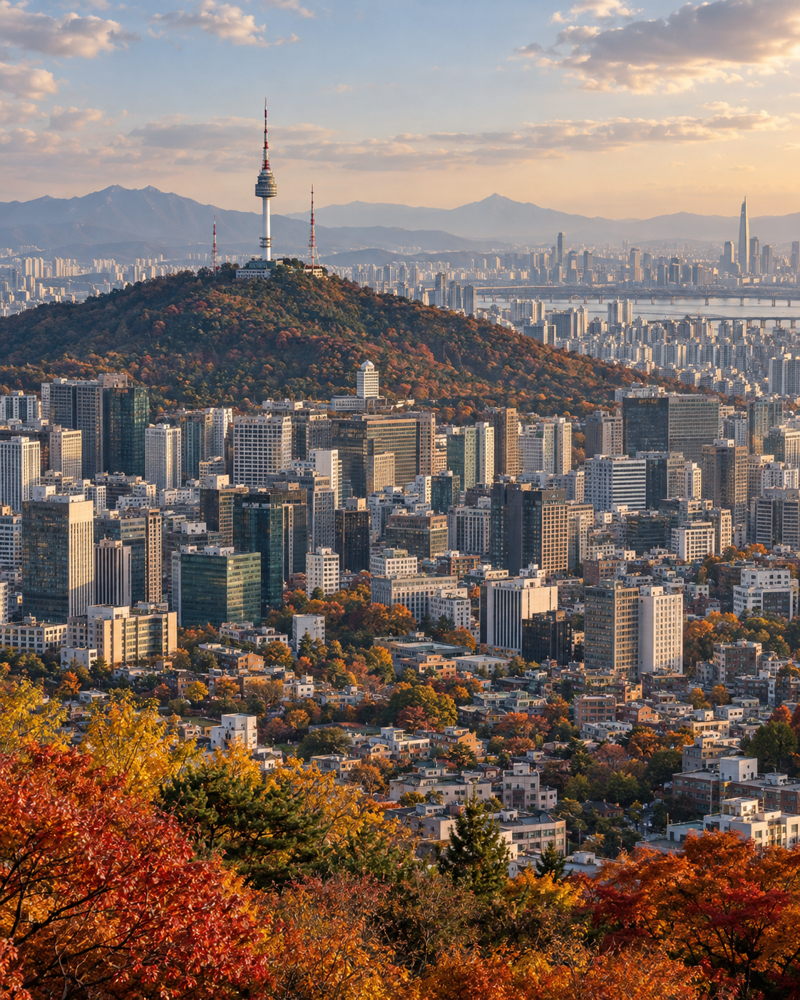
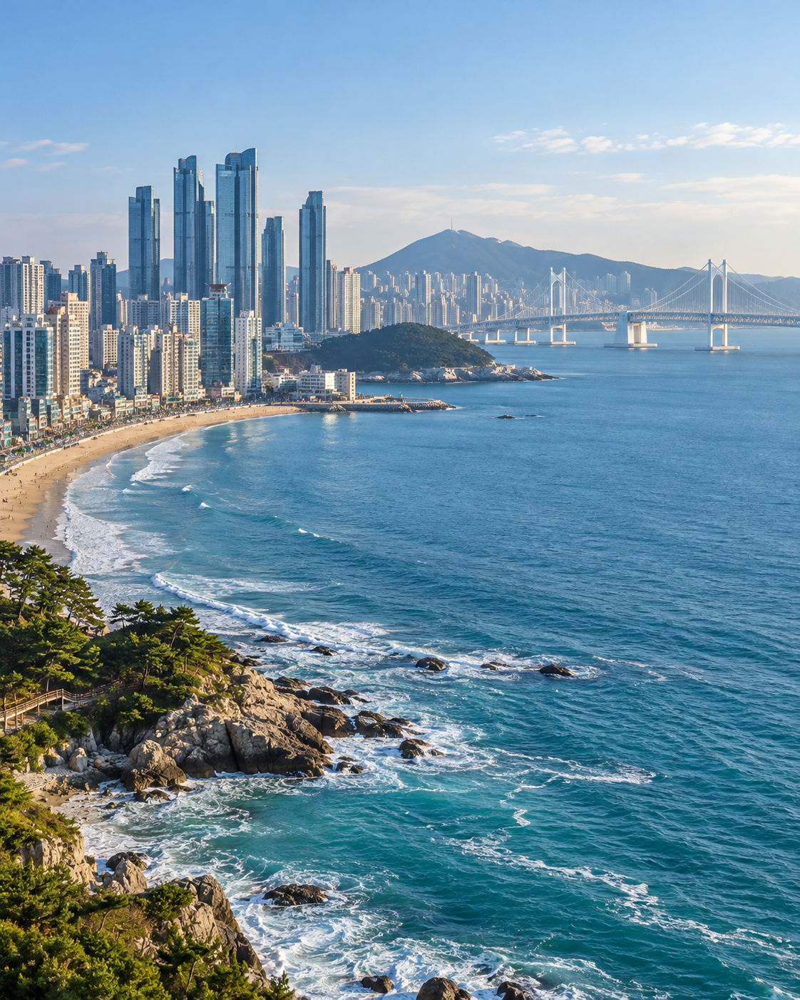
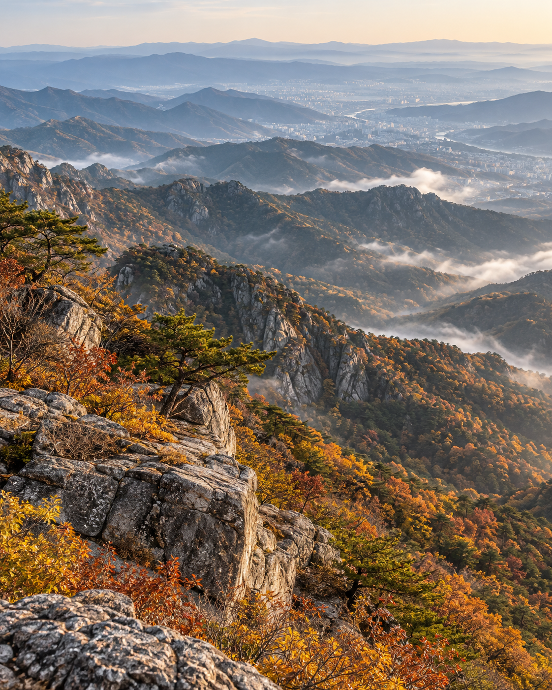
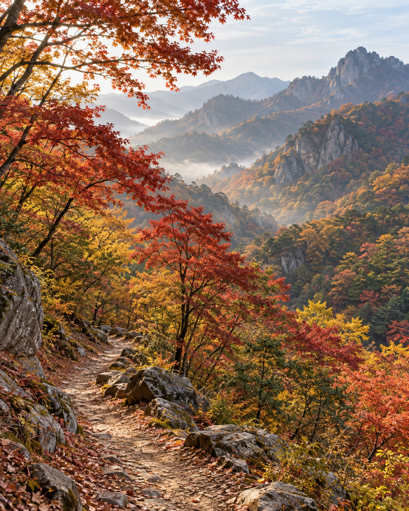

여행지 검색
가을 여행 큐레이션 · 01
익숙한 일상에서 잠시 벗어나, 붉게 물든 가을 산 속에서 특별한 풍경을 만나보세요.
가을 추천 여행지
계절이 더 아름답게 만드는 특별한 곳들을 소개합니다.

도심 속 가을의 여유

가을 바다와 낭만적인 해안

가까이에서 만나는 가을 산
검색 조건에 맞는 여행지를 찾지 못했습니다.
여행을 바라보는 새로운 시선
가까운 곳에서도, 조금 더 느리게, 조금 더 깊이.당신만의 특별한 순간을 만나보세요.
여행 이야기 · 데모 콘텐츠
SIIII.TR과 함께한 여행의 기억을 만나보세요.

일정을 채우기보다 천천히 걷는 시간이 좋았어요. 내장산의 가을빛을 오래 기억할 것 같습니다.
아침의 해안부터 저녁의 도시까지, 서두르지 않는 구성이라 부산이 새롭게 보였습니다.
늘 지나던 서울도 시선을 바꾸니 여행지가 되었습니다. 골목과 남산의 조합이 인상적이었어요.
개인정보 안내 · 데모
이 웹사이트는 프런트엔드 시연용입니다. 예약 페이지에 입력한 정보는 서버로 전송되거나 저장되지 않습니다.